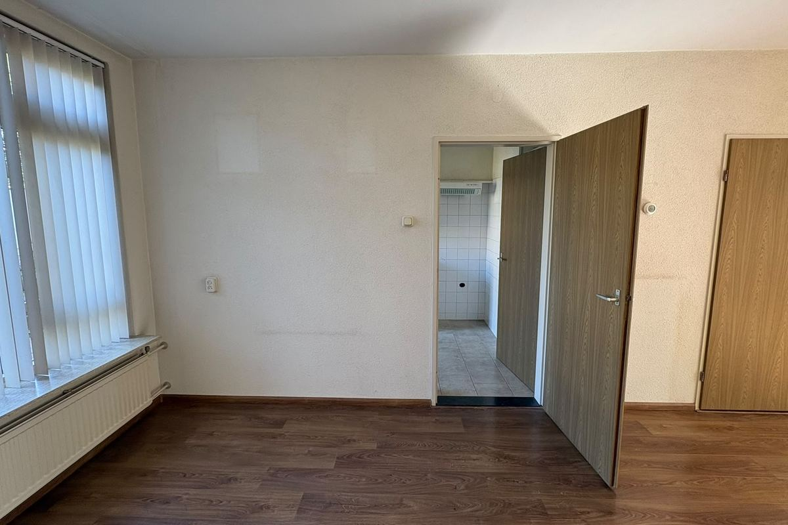
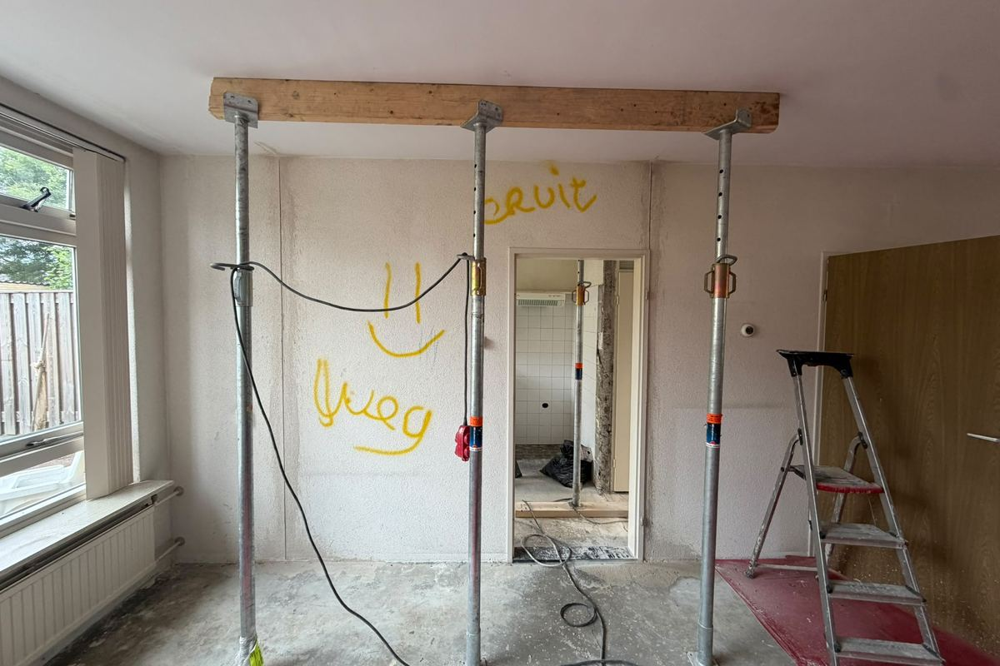
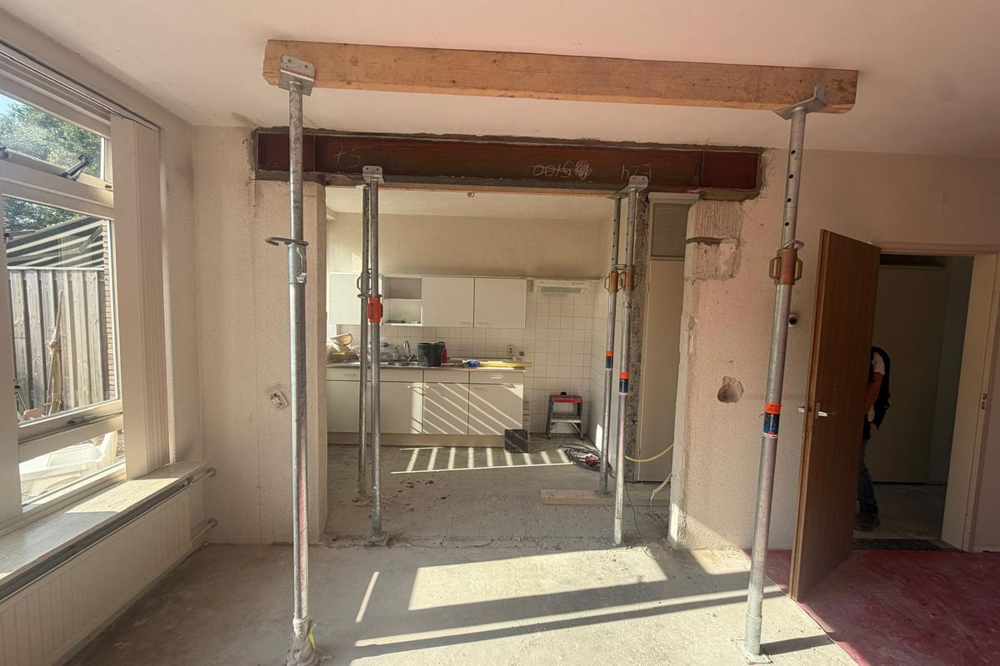

Zo verloopt een doorbraak
Van een gesloten muur naar een open ruimte
Drie foto's vanaf hetzelfde punt in de woonkamer, tijdens een doorbraak in Bemmel. Wat u op de laatste foto boven de opening ziet is de stalen ligger die de draagmuur vervangt.

Stap 1De dragende wand tussen woonkamer en keuken, nog dicht. 
Stap 2Afgetekend en gestempeld. De stempels nemen de vloer over voordat er ook maar iets weg gaat. 
Stap 3De sparing is open en de ligger ligt. Daarna kunnen de stempels eruit.
Nijmegen · doorbraak achteraf gelegaliseerd
Malden · nieuwbouw woonhuis
Uitbouw · de gevel over de volle breedte open
Wat ik voor u doe
Constructie voor verbouwingen aan woningen
Berekening én tekening, afgestemd op uw bestaande huis en klaar voor de gemeente. Dit zijn de klussen die ik het vaakst doe.
Draagmuurdoorbraak
Een muur eruit, de ruimte open. Ik bereken de stalen ligger, de penanten waar hij op rust en of de bestaande fundering die extra last aankan.
€ 850
incl. btw · berekening en tekening · binnen 5 werkdagen
Uitbouw
Meer ruimte aan de achter- of zijkant. Constructie voor de uitbouw, de fundering en de aansluiting op de bestaande woning. →Opbouw
Een extra verdieping of dakopbouw. Alle last komt op wat er al staat, dus begin ik onderaan bij de fundering. →Al verbouwd zonder berekening?
Ik meet de bestaande situatie op, reken haar na en lever de stukken waarmee de gemeente alsnog kan beoordelen. →Waar ligt de bouwtekening van uw huis?
Ik vraag alles op wat er over uw adres te vinden is en zeg wat erin staat en wat er ontbreekt. Dan weet u zeker dat er niets meer ligt en kan uw tekenaar, architect of constructeur beginnen. →Liever de hele doorbraak uit handen?
Met MAREE Aanneming onder de naam De Draagmuurkoning, van tekenwerk tot de gestuukte wand. →Zo werkt het
Van uw situatie tot een goedgekeurde aanvraag
Vier stappen, en op elk moment weet u waar we staan. U hoeft zelf niets uit te zoeken.
1
U vertelt uw plan
Bel, mail of stuur een berichtje. Tekeningen meesturen mag, maar hoeft niet. Ik kan ze voor u opzoeken of opvragen bij de gemeente.
2
Ik reken en teken
U krijgt vooraf een vaste prijs. Daarna maak ik de constructieberekening en bijbehorende tekening. Compleet pakket binnen 5 werkdagen nadat ik alle gegevens heb.
3
Klaar voor de gemeente
De constructieberekening en bijbehorende tekening waarmee u de omgevingsvergunning aanvraagt en uw aannemer direct verder kan.
4
Ik blijf bereikbaar
Heeft de gemeente nog een vraag, moet de aannemer iets afstemmen over de uitvoering, of loopt u tijdens de bouw tegen iets aan? Dan kunt u mij gewoon bellen.
Werkgebied
Actief in de regio Nijmegen en omgeving
Ik werk door heel Nederland, maar het meeste van mijn werk ligt binnen een half uur rijden van Malden. Dat betekent dat ik bij u langs kan komen kijken als dat helpt.
Daarnaast werkte ik onder meer in Huissen, Bemmel, Milsbeek, Lent, Malden en Renkum. Ook verder weg neem ik werk aan, tot in Amsterdam, Utrecht en Almere. Langskomen is daar meestal niet nodig: met foto's, de maten en de bouwtekening kan ik de berekening maken.

Waarom Cox Constructieadvies
Van tekentafel tot bouwplaats. Een persoon, het hele traject.
Bij Royal HaskoningDHV was het werk vooral theoretisch: ontwerpen die jaren later pas gebouwd werden. Hier is het praktisch. De aannemer belt mij op video terwijl hij op de bouwplaats staat, om even te sparren over de uitvoering. Dat directe contact, dat korte lijntje tussen tekentafel en bouwplaats: dat is wat dit werk voor mij zo leuk maakt.
Ik kan de constructiewereld niet loslaten. De snelheid, het directe contact, het gevoel dat mijn berekening vandaag al het verschil maakt op iemands bouwplaats: dat geeft voldoening die ik nergens anders vind.
Beoordelingen
Wat klanten zeggen
Jordy Maree
★★★★★Google
“Zoals deze jongen mee denkt en mee werkt en snel schakelt is zeker in de wereld van constructeurs echt een verademing. Ik ben zelf aannemer in de bouw en met Simon kan ik lezen en schrijven.”
Carola Weijers
★★★★★Google
“De berekening werd snel en vakkundig opgesteld, en op al onze vragen kregen we razendsnel een uitgebreid en duidelijk antwoord.”
Muurdoorbraak
Niels
★★★★★Google
“Simon heeft mij snel en vakkundig geholpen met een aantal verschillende constructieve kwesties tijdens de renovatie van een oud pand. Hij weet waar hij over praat en kan goed schakelen en meedenken in wat er nodig is op welk moment.”
Renovatie oud pand
Peter Schoutens
★★★★★Google
“Scheuren binnen na nieuw voegwerk buitengevel; fijn en deskundig advies van Simon. Een aanrader!”
Advies scheurvorming
Jeffrey de Jong
★★★★★Google
“Simon heeft zeer goed zijn werk gedaan! Altijd bereikbaar bij de volgende klus bel ik hem weer”
Berekening garage
Gregory Tese
★★★★★Google
“Top getekend en duidelijk gecommuniceerd met alles erbij.”
Uitbouw
giorgio carrus
★★★★★Google
“Fijne samenwerking en technische doorvraag van muur over de maximale breedte, waar ik blij mee ben”
Muurdoorbraak
Morris Van Gils
★★★★★Google
“Simon was super behulpzaam bij een vraag die we hadden over een al dan niet dragende muur. Alles geduldig en zorgvuldig uitgelegd.”
Advies dragende muur
Roxanne De Vroedt
★★★★★Google
“Simon reageert snel, communiceert fijn en duidelijk, denkt mee en kon in de zomervakantietijd ons snel helpen met de construcieberekeningen voor een draagmuurdoorbraak. Ook het feit dat wij zo'n 3x wisselden van plan was geen probleem.”
Draagmuurdoorbraak
Beerend de Bie
★★★★★Google
“Fijne communicatie, denkt mee, handelt snel. Vergunning werd in 1x verleend door de gemeente. Nogmaals bedankt Simon!”
Aanbouw met doorbraak
Daan Ruiter
★★★★★Google
“Heel fijn contact gehad over constructieve vragen voor een nieuwe badkamer. Via de telefoon meegedacht en geholpen.”
Advies badkamer op zolder
Konstantin Simočenko
★★★★★Google
“Simon was really helpful and easy to communicate with. He took the time to understand my situation, was proactive, engaged, and explained everything clearly. ... The advice was thorough and gave me exactly the reassurance and information I was looking for.”
Advies belasting zoldervloer
Luuk de Bruin
★★★★★Google
“Mede dankzij Simon hebben we ons droomhuis kunnen realiseren! Het gehele proces is zeer soepel verlopen, en het resultaat is perfect.”
Nieuwbouwwoning
Contact
Vertel me wat u wilt verbouwen
Dan zeg ik u wat er constructief moet gebeuren en wat het kost. Blijkt uw muur niet te dragen, dan hoort u dat ook. Dat scheelt u een berekening.
Tekeningen meesturen mag, maar hoeft niet: ik kan ze voor u opzoeken of opvragen bij de gemeente. Een paar foto's en de globale maten zijn vaak al genoeg om te beginnen.

Scan voor mijn contactgegevens in uw telefoon